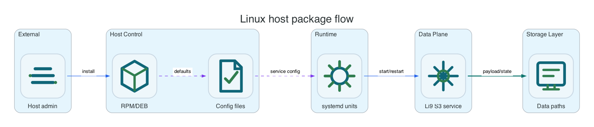

Reference / Platform / Linux
Linux host package reference.
Use this reference when RPM or DEB packages install Li9 S3 onto Linux hosts and systemd owns service lifecycle.
Ownership Model

| Layer | Owner | Linux Surface | Operational Rule |
|---|---|---|---|
| Package lifecycle | RPM/DEB package manager | dnf, yum, apt, internal repositories | Upgrade with package manager transactions and validate service health after each node. |
| Service lifecycle | systemd | li9-s3-storage.target, templated li9-s3@.service units | Start, stop, restart, and inspect services through systemd. |
| Runtime configuration | Host config files | /etc/li9-s3/storage.yaml, /etc/li9-s3/tls | Configuration management should render files consistently on every node. |
| Data and metadata | Mounted persistent disks | /var/lib/li9-s3/data, /var/lib/li9-s3/metadata, /var/lib/li9-s3/wal | Mounts must survive reboot and must not be cleaned by package uninstall unless explicitly requested. |
Host Paths And Services
| Item | Default | Purpose |
|---|---|---|
| Config directory | /etc/li9-s3 | Cluster config, runtime config, and TLS references. |
| Data directory | /var/lib/li9-s3/data | Object payload shards or replicated object data. |
| Metadata directory | /var/lib/li9-s3/metadata | Raft/KV state, snapshots, and product metadata. |
| WAL directory | /var/lib/li9-s3/wal | Metadata write-ahead log; prefer low-latency storage. |
| Log destination | journald and /var/log/li9-s3 | Service logs, audit delivery diagnostics, and package troubleshooting. |
| Main target | li9-s3-storage.target | Starts all enabled Li9 S3 runtime services for the host. |
Common Commands
sudo systemctl status li9-s3-storage.target --no-pager
sudo systemctl list-units 'li9-s3*'
sudo journalctl -u 'li9-s3*' --since -30m --no-pager
sudo li9-s3ctl health --config /etc/li9-s3/storage.yaml
sudo li9-s3ctl cluster members --config /etc/li9-s3/storage.yaml